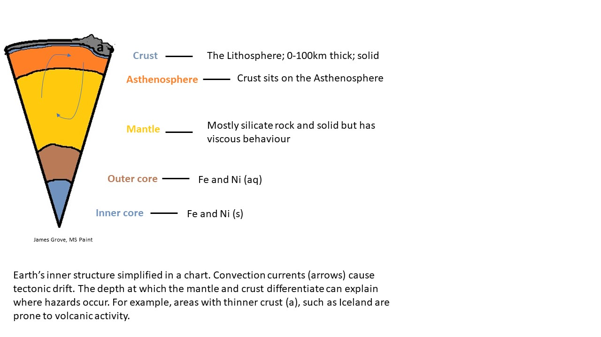

Geological Time
Patch Three
Understanding the structure and formation of the Earth can help us understand the risks that geological processes pose. The Earth’s non-uniformity means that hazards differ regionally. For example, as there is less distance between the crust and mantle in Iceland they are prone to volcanic activity. Furthermore, topography can influence hazards, such as steep narrow valleys being subject to flooding post heavy rain, for example Calder Valley, England.
Dipping is used to describe the slope of a geological surface Lisle, (2020). There are two aspects to a dip of a plane. 1. Direction of dip, cardinal direction of which the plane slopes (direction water would flow). 2. Angle of dip, angle that the plane makes with a horizontal plane (between 0 and 90 degrees). This is represented by two numbers 138/47 would mean 138 degrees North, 47 degrees slope.
Patch Three